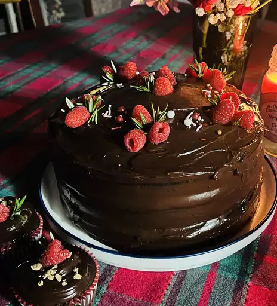

Home
Chocolate Stout Cake

Ingredients
Chocolate Caramel Frosting
- 2 Cups Dark Chocolate Chips
- 1 1/2 Cups White Sugar
- 1/4 Cup Water
- 3 Tablespoons Light Corn Syrup
- 1/4 Tablespoon Salt
- 1 1/2 Cups Heavy Cream
- 2 Teaspoons Vanilla Extract
- 3 Tablespoons Irish Cream Liqueur
- 3 Tablespoons Unsalted Butter
Chocolate Stout Cake
- 1 Bottle (11.2 Ounces) Stout Beer
- 1 Tablespoon Dark Brown Sugar
- 1 3/4 Cups All-Purpose Flour
- 1 Cup Cocoa Powder
- 1 Teaspoon Baking Powder
- 1 Teaspoon Baking Soda
- 3/4 Teaspoon Salt
- 1/2 Cup Unsalted Butter
- 3 Tablespoons Vegetable Oil
- 1 Cup Dark Brown Sugar
- 1/2 Cup White Sugar
- 2 Large Eggs, Room Temperature
- 1 Cup Full-Fat Sour Cream, Room Temperature
- 2 Teaspoons Vanilla Extract
Steps
- Make frosting: Place dark chocolate chips in a large bowl; set aside.
- Combine 1 1/2 cups white sugar, water, and corn syrup in a light colored, tall-sided saucepan. Place pan over medium heat and cook until mixture begins to turn a deep amber color, swirling pan often to combine ingredients; about 15 minutes. Remove pan from heat and carefully pour in heavy cream (mixture will bubble up rapidly and then seize, this is ok). Place pan back over low heat and bring to a boil, stirring constantly. Allow mixture to boil for 5 minutes, stirring constantly, then immediately pour caramel over the chocolate chips. Allow mixture to stand for 1 minute.
- Gently stir until chocolate is melted and smooth. Add in 2 teaspoons vanilla and Irish Cream and mix until combined. Add in butter 1 tablespoon at a time, making sure each addition is fully incorporated before adding the next, until all 3 tablespoons of butter are incorporated. Loosely cover bowl with a kitchen towel and set aside to cool to room temperature, stirring occasionally (this will take 4 to 6 hours).
- Combine stout beer and 1 tablespoon dark brown sugar in a saucepan set over medium heat. Bring to a simmer, stirring occasionally, until mixture has reduced to 1 cup, 8 to 10 minutes. Remove from heat and allow to cool to room temperature, about 20 minutes.
- Preheat the oven to 350 degrees F (175 degrees C). Grease and flour 2 (9-inch) round cake pans.
- Sift together flour, cocoa powder, baking powder, baking soda, and 3/4 teaspoon salt; set dry ingredients aside.
- Beat 1/2 cup unsalted butter, vegetable oil, 1 cup dark brown sugar, and 1/2 cup white sugar together in a large bowl or the bowl of a stand mixer until light and fluffy, 3 to 4 minutes. Add in eggs 1 at a time, beating well after each addition, and scraping down the sides of the bowl as needed. Beat mixture on medium-high speed for 4 to 5 additional minutes after adding in the last egg. Mix in sour cream and 2 teaspoons vanilla extract.
- Pour in half of dry ingredients and mix on low until just combined. Pour in cooled stout mixture and mix until just combined. Add in remaining dry ingredients and mix until just combined.
- Divide batter evenly between the 2 prepared cake pans. Tap pans on the counter several times to remove any larger air bubbles.
- Bake in the preheated oven and until the tops of the cakes spring back lightly when touched, 30 to 35 minutes. Allow cakes to cool in pans for 20 to 30 minutes before removing to a wire rack to cool completely, about 1 hour.
- Once cakes and frosting are both cooled, place one cake layer on a serving platter. Top with about 1 cup frosting; spread it into an even layer. Top with remaining cake. Pour remaining frosting over the top of the cake and smooth over top and sides of cake until completely frosted on all sides.